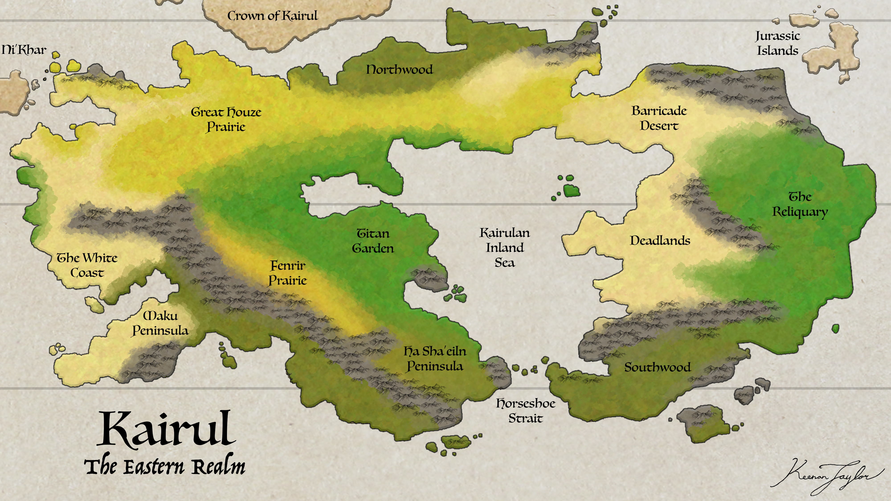
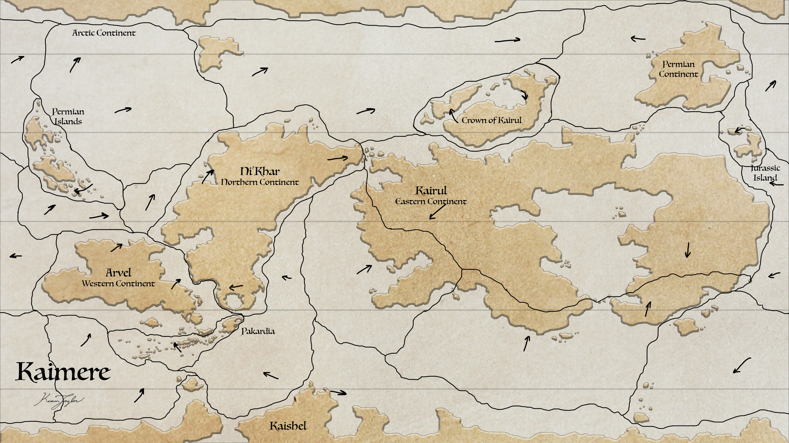
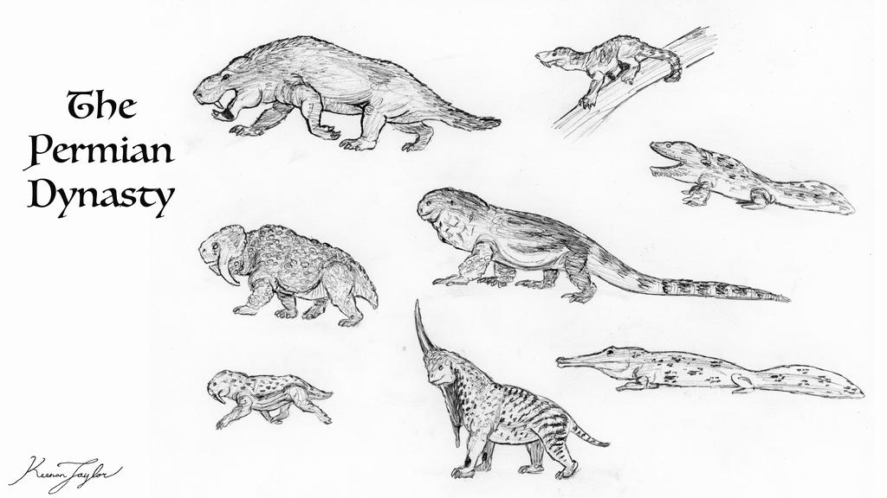
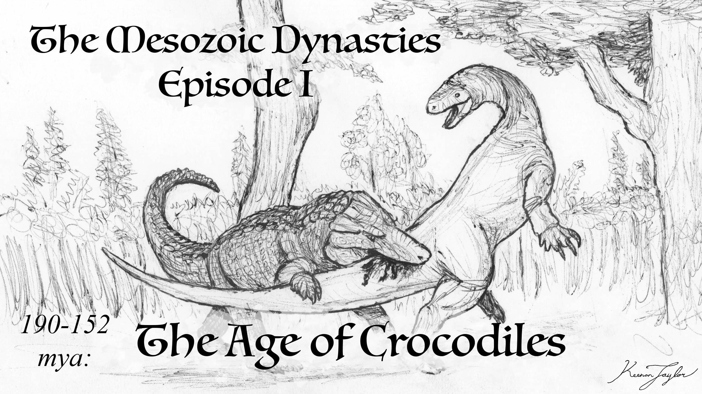
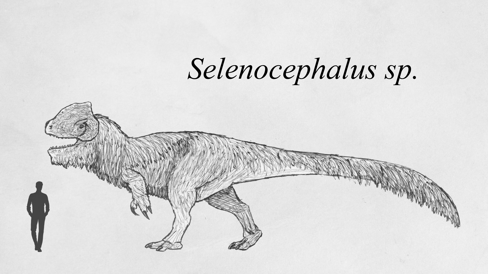
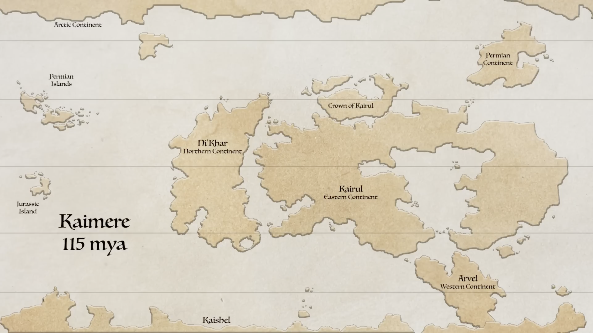
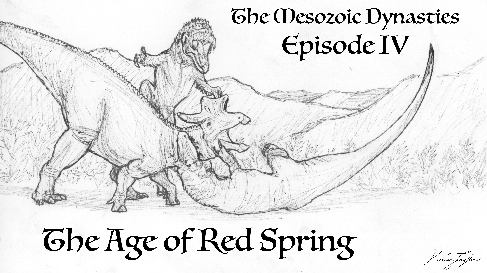
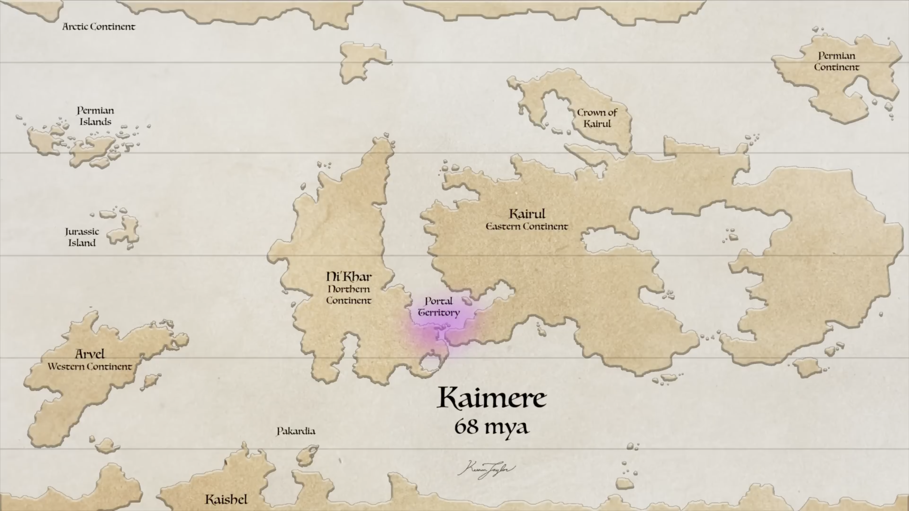
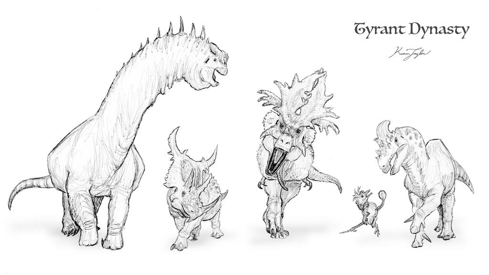

01 · INTRODUCTION
Overview

Kairul, meaning The Eastern Realm in Amenetran is by far the largest continental landmass on Kaimere. Extending across almost half the planet's circumference from west to east and spanning substantial portions of both northern and southern temperate latitudes, it encompasses an extraordinary diversity of climatic regions, geological formations, and terrestrial ecosystems. Its present configuration is sufficiently extensive that some geologists consider it not one continent in the conventional geological sense, but a supercontinental amalgamation of as many as four formerly independent continental plates. The precise nature of these constituent landmasses remains uncertain, however, and the geological relationships between them have yet to be established conclusively.
Despite its enormous dimensions, Kairul is not uniformly arid. Its defining geographical feature, the Kairulan Inland Sea, occupies a vast central depression and provides an extensive source of atmospheric moisture. The circulation of warm maritime air across this inland body of water is fundamental to the continent's environmental organization, allowing humidity and precipitation to penetrate far beyond the immediate coastlines. In combination with seasonal atmospheric circulation, this supports extensive forests, tropical woodlands, wetlands, and grasslands across regions that would otherwise be considerably more desiccated.
Nevertheless, Kairul remains an environmentally demanding continent. Its equatorial regions experience extraordinary temperatures, while substantial portions of both western peninsulas are arid as a consequence of prevailing offshore winds and cold oceanic currents. Several extensive mountain systems further compartmentalize the continent, producing rain shadows, restricting atmospheric exchange, and separating otherwise neighboring ecological communities. The interaction of these features creates considerable ecological isolation despite Kairul's continental scale.
Naturalists of the Great Library conventionally recognize three principal ecological subdivisions, commonly described as the western, eastern, and northern eco-continents. These are not separate geographical continents in the strict tectonic sense, but biogeographical regions distinguished by their respective climates, geographical barriers, and evolutionary histories. The eastern eco-continent is particularly distinctive, possessing a substantially different assemblage of terrestrial organisms and comparatively little faunal exchange with its western and northern counterparts. Heat, aridity, and elevation contribute to this separation, although none represents an absolute barrier to dispersal.
The geographical arrangement of Kairul is dominated by the central inland sea and the large peninsulas surrounding it. The western peninsula contains extensive grasslands, forested lowlands, and some of the continent's Titan Gardens. Its western coastline is comparatively dry, while the interior and eastern-facing regions benefit from moisture transported across the inland sea. The eastern peninsula possesses a similarly pronounced climatic contrast, with the arid Deadlands and Barricade Desert giving way to the extensive forests of the Reliquary and Southwood. To the north f both peninsulas, a broad expanse of grassland, woodland, and desert extends toward the Crown of Kairul and the northern reaches of Ni'Khar.
The continent's climatic diversity is reflected in the distribution of its principal habitats. The Great Houze Prairie occupies an extensive region of northern Kairul, where heat and seasonal rainfall support vast grasslands dominated by houze grass. The northern forests of Northwood occupy comparatively temperate environments, while the Barricade Desert forms a substantial arid region in the northeastern interior. Farther east, the Reliquary represents one of the largest forested regions of the continent, separated from the Deadlands by mountain systems and extensive dry country.
The central western regions are characterized by the Kairulan Titan Garden, an extensive woodland ecosystem maintained through the activities of enormous herbivorous dinosaurs, particularly titanosaurs. These animals alter forest structure through feeding, trampling, and the removal of mature vegetation, creating a shifting landscape of open woodland, fern meadows, and dense regrowth. South of this region, the Fenrir Prairie supports a distinct grassland community, while the Ha Sha'eiln Peninsula contains a mixture of wooded, and montane environments, alongside open habitats. In the southeast, Southwood forms another extensive forested region, occupying a comparatively humid portion of the eastern peninsula.
Kairul's climate is particularly unusual when compared with modern Earth. Its tropical ocean waters are exceptionally warm, with equatorial surface temperatures generally reaching approximately 90 — 95°F. Inland temperatures are somewhat lower, with mean annual temperatures commonly ranging between 85 and 90°F in the hottest lowland regions. Elevation provides some relief, and certain highland environments may average closer to 80 — 70°F. Seasonal temperature fluctuations are relatively limited throughout much of the equatorial continent, although individual days may exceed 120°F, while unusually cold nights can descend into the low 50s.
The circulation of atmospheric moisture is therefore essential to the survival of Kairul's terrestrial ecosystems. The inland sea moderates the surrounding environment and provides a major reservoir of atmospheric humidity, but its influence is uneven. Some regions receive warm, moisture-bearing winds from the sea, while others remain sheltered by mountains or exposed to offshore circulation. The resulting pattern of humid and arid environments is among the principal reasons Kairul possesses such extensive ecological differentiation.
Kairul is also one of the most important centers of dinosaur diversity on Kaimere. The absence of the asteroid impact that ended the Mesozoic on Earth allowed dinosaur lineages to persist and diversify, and the continent's enormous geographical extent has supported numerous independent radiations. Megaraptorans dominate much of its terrestrial predatory fauna, although abelisaurids, giant dromaeosaurs, tyrannosaur descendants, and other theropods occupy important specialized niches. Large herbivorous dinosaurs, particularly titanosaurs and various ornithischians, remain among the most conspicuous components of its terrestrial ecosystems.
Mammals are also exceptionally successful, although their diversity and ecological dominance vary considerably between regions. Entelodonts, oreodonts, rhinoceroses, horses, camels, multituberculates, nimravids, and numerous endemic mammalian clades occupy habitats ranging from open prairie to dense forest and wetland. In particular, the extensive grasslands of northern Kairul support a remarkable diversity of equids and other cursorial mammals, while the Fenrir Prairie is notable for its entelodont diversity and populations.
Kairul is consequently a continent of considerable ecological complexity. Its size alone would suggest a substantial degree of environmental diversity, but it is the interaction of its inland sea, mountain barriers, extreme equatorial temperatures, and contrasting oceanic circulation that produces its unusually differentiated ecosystems. Rather than supporting a single continuous continental fauna, Kairul contains several ecological worlds whose inhabitants have evolved in relative isolation despite their geographical proximity.
02 · Beginnings
Geological Origins

Kairul's geological history extends into the earliest periods of Kaimere's terrestrial evolution. Although its present configuration is considerably different from that of its ancient predecessors, the continent represents part of one of the oldest continuously existing geographical regions of the planet. Its geological development is closely associated with the repeated assembly and fragmentation of Kaimere's continental plates, processes that have profoundly influenced the planet's climate, biological diversity, and patterns of faunal interchange.

During the First Dynasty, Kairul formed part of a considerably larger continental system associated with the ancient Ni'Khar-Kairulan supercontinent. At this time, terrestrial environments across much of Kaimere were dominated by warm, humid conditions. Extensive forests and wetlands supported extraordinary diversity among endemic organisms, including several major tetrapod lineages that had no direct equivalents on Earth.

Around 265 million years ago, continental movement substantially altered the arrangement of Kaimere's oceanic and atmospheric circulation. As the continents rotated and moved closer together, important marine passages and atmospheric pathways became restricted. These changes disrupted the circulation systems that had maintained the global hothouse climate and contributed to a widespread transition toward increasingly arid conditions.
The ecological consequences were considerable. Endemic ndar and related kollasperms, which had previously been among the dominant terrestrial plants, experienced increasing competition from newly introduced gymnosperms. Their reproductive systems, dependent upon substantial moisture availability, became disadvantageous as forests and wetlands contracted. Although some lineages eventually developed more sophisticated reproductive structures capable of protecting their gel-coated seeds, these adaptations were insufficient to prevent the broader ecological transition toward gymnosperm-dominated vegetation. Remnant kollasperms persist in modern Kaimere, ranging from small epiphytes and shrubs to substantial trees such as the zichevo ndar, but they no longer dominate the planet's terrestrial flora.
The animal communities of the First Dynasty experienced similar difficulties. Torosteons, which had been among the most prominent large terrestrial organisms, became increasingly fragmented as the humid atmospheric conditions upon which their respiratory systems depended became less prevalent. Large ambuloichthyans were also affected by the contraction of the extensive wetlands they inhabited, while the large carbosuchians that depended upon these organisms and torosteons as prey experienced corresponding ecological declines.
The environmental changes occurring around 265 million years ago did not immediately eliminate the First Dynasty. Several indigenous lineages retained considerable success, particularly in the southern continental regions that were becoming increasingly isolated. Fabadonts and heterotherms possessed representatives adapted to the developing arid environments, while dignathians also maintained populations in regions where their ecological requirements remained available. These survivors would later become particularly important components of the southern continental or Kaishelan fauna.

At approximately 255 million years ago, the First Dynasty was brought to an abrupt conclusion by an asteroid impact affecting the tropical western coastline of the Ni'Khari-Kairulan supercontinent. Although the impactor was smaller than the asteroid responsible for the Cretaceous-Paleogene extinction on Earth, its effects were catastrophic, particularly because the planet's ecosystems were already experiencing significant environmental stress.

The resulting extinction devastated much of the continental fauna. The subsequent ecological vacuum was filled by repeated harvests of Late Permian organisms from Earth, initiating the Permian Dynasty. This marked a profound change in the biological character of the northern supercontinent, as numerous newly introduced therapsids rapidly occupied habitats previously inhabited by endemic organisms.
Kairul remained part of this changing continental system. Its tropical environments became increasingly dominated by the incoming Permian fauna, while older lineages like ambuloichthyans, and carbosuchians a persisted primarily in regions where their geographical isolation provided protection from competitive displacement.
A further major geological disturbance occurred around 190 million years ago, when a deep fracture in the planet's crust apparently connected the surface with regions of considerable internal heat and chemical activity. The resulting eruption released enormous quantities of heat, carbon dioxide, and toxic compounds into the atmosphere. Although the precise location of this event remains unknown, it appears to have been associated with a period of accelerated tectonic activity and substantial environmental disruption.
During the Mesozoic, Kairul still remained slightly connected to Ni'Khar, forming an enormous tropical continental system. The region was characterized by extensive seaways, wetlands, and humid forests. The presence of these waterways was important because they allowed atmospheric moisture to penetrate the continental interior, maintaining extensive tropical environments despite the continent's enormous size.

The first major Mesozoic ecological radiation was dominated by pseudosuchian archosaurs. During the Age of Crocodiles, basal crocodylomorphs diversified into an extraordinary variety of predatory and herbivorous forms. Their success was closely associated with the extensive wetlands and humid forests of tropical Kairul, where many of the largest predators were crocodilian rather than dinosaurian.
The emergence of dinosaurs gradually altered this ecological balance. Early theropods initially occupied subordinate predatory niches, but several lineages increased in size and eventually replaced the largest pseudosuchian predators. Simultaneously, herbivorous crocodilian lineages diversified into increasingly specialized forms, some of which remain represented in modern Kairul and other regions of Kaimere.

A substantial climatic reversal occurred between approximately 152 and 145 million years ago. Kaimere experienced an unusually severe period of global cooling, apparently associated with changes in axial tilt, continental arrangement, and oceanic circulation. Temperatures declined sufficiently to produce extensive ecological disruption throughout the tropical continents, although the glaciers themselves did not extend into the equatorial regions.
The cooling period had particularly serious consequences for pseudosuchians, whose metabolic requirements and physiological adaptations made them comparatively vulnerable to the loss of consistently warm environments. Dinosaurs, especially the more endothermic theropod lineages, became increasingly successful under the changed climatic conditions.

Among the most important beneficiaries were the coelophosaurs, which became dominant predators throughout Kairul and Ni'Khar during the ice ages. The enormous Selenocephalus, or moon-crested terror, represents one of the most prominent examples of this radiation. Its exceptional size and elaborate cranial sinus structure were associated with a period in which cold-adapted terrestrial predators enjoyed considerable ecological success.

As temperatures recovered, parasauropods became increasingly important within the southern continental regions. These animals possessed greater cold tolerance than true sauropods, owing partly to their more robust construction and less extensive skeletal pneumaticity. Their evolutionary history subsequently became closely associated with the temperate and polar regions of Kaimere, particularly Kaishel and the southern continental remnants.

The following Cretaceous saw substantial changes in continental geography. Arvel began separating from the ancient southern landmass, while portions of the northern continental system underwent further fragmentation. A short-lived land connection between western Arvel and eastern Kairul around 115 million years ago facilitated the Age of Tremor and Travel, introducing numerous new dinosaur lineages into the southern ecosystems.

The period between approximately 85 and 70 million years ago, commonly called the Red Spring, was characterized by extensive climatic and ecological instability. Although the climate was generally warm and humid, repeated continental movements and new biological introductions produced substantial competitive pressures. Carcharodontosaurs remained among the dominant predators, while tyrannosaurs, megaraptorans, abelisaurids, and other theropods occupied a range of subordinate niches.
The latter part of the Cretaceous saw increasing importance among hadrosaurs, ceratopsids, and other specialized herbivores. Flowering plants became increasingly common, although gymnosperms remained significant components of the vegetation. The extensive humid environments supported substantial animal populations, and large nesting colonies of hadrosaurs became major ecological features of the continent.

Around 68 million years ago, climatic conditions shifted abruptly toward a cooler, more arid regime. The precise cause remains uncertain, but the proposed mechanisms include continental drift, volcanism, and changes in axial tilt. This transition eliminated numerous wetland-dependent herbivores, particularly hadrosaurs and ceratopsids, while creating new opportunities for animals adapted to more seasonal conditions.
A harvest from Late Maastrichtian Asia subsequently introduced a substantial collection of arid-adapted organisms. Many of these arrivals rapidly established themselves across Kairul and Ni'Khar, contributing to the formation of a new period of ecological stability known as the Tyrant Dynasty.

The Tyrant Dynasty endured for more than 50 million years. During this period, tyrannosaurids dominated the largest terrestrial predatory niches, while hadrosaurs, titanosaurs, ceratopsids, and numerous other herbivores structured the continental ecosystems. The climate was generally warm and humid, supporting extensive fern prairies, open conifer forests, and substantial wetland systems.
An important geological characteristic of this period was the continued separation of the Crown of Kairul, which developed its own ecological communities in relative isolation from the dominant faunal assemblages of the principal continental regions. Meanwhile, the main continental system maintained substantial biological continuity despite occasional climatic disturbances and limited harvest activity.

Thirty million years ago, as Kaimere was in the midst of the Tyrant Dynasty, a burst of volcanism ravaged southwestern Ni'Khar. A localized extinction followed. Shortly after the lava cooled, the first known Cenozoic harvest was triggered. Millions of new plants and animals were introduced from North America and Western Europe into both Ni'Khar and Kairul. The vast majority were more derived mammals, that filled in vacant niches that the volcanic eruption created.
The conclusion of the Tyrant Dynasty was associated with another major volcanic disturbances around 15 million years ago. These events formed part of the broader Dynastic Extinction, which devastated ecosystems across several regions of Kaimere. Geological evidence from southern Kairul suggests significant volcanic activity coincided with the fragmentation and collision of major continental plates, although the precise causal relationship remains uncertain.
The extinction eliminated numerous established megafaunal lineages and opened substantial ecological opportunities for surviving groups. In Kairul, several smaller dinosaurian and mammalian lineages underwent extensive adaptive radiations. The following period was characterized by substantial evolutionary experimentation as previously subordinate organisms expanded into vacant niches.
The subsequent climatic history included further fluctuations between humid and arid conditions. Buyt most of these are minimal. Following the Dynastic Extinction, the Portals territory no longer encompassed the continent since the Dynastic Extinction. As such, newely introduced flora and fauna can only reach the continent from the Known World via wind or ocean currents, and climate changes that impact range expansion. For example, between twelve to ten million years ago, a cooling and aridification trend enabled a land bridge to form between Kairul and Ni'Khar, allowing a faunal interchange that triggered a harvest. And following that event, approximately eight million years ago, the trend reached its peak in an event called the Great Drying. During this event, giant megaraptorans originating from southern Ni'Khar began dispersing across Kairul. These robust monarchs rapidly established themselves as dominant terrestrial predators across much of the continent, displacing several established predatory lineages while leaving specialized wetland predators comparatively undisturbed. An additional interchange occured later, around 1.5 million years ago following the end of the Anchored Period.
As such, the modern Kairulan ecosystem is consequently the product of an exceptionally long geological history. Its present configuration preserves elements of several ancient continental systems, while its biological communities reflect successive periods of climatic change, extinction, isolation, and faunal interchange.
03 · Physical Structure of Kairul
Geographic Context
The geographical configuration of Kairul is dominated by its extraordinary east-west extent and the presence of the Kairulan Inland Sea, which separates and connects several distinct continental regions. Its immense landmass encompasses numerous peninsulas, mountain systems, inland basins, offshore islands, and extensive coastal environments. The geographical map identifies a series of major ecological regions whose distribution reflects the interaction of these physical features.
Although Kairul is conventionally treated as a single continent, its internal geographical divisions are sufficiently pronounced that naturalists often describe it as three separate eco-continents: the western, eastern, and northern regions. These divisions are not necessarily equivalent to tectonic boundaries. Rather, they reflect long-standing ecological separation produced by mountain ranges, arid environments, extreme temperatures, and differences in atmospheric and oceanic circulation.
The Kairulan Inland Sea occupies the central portion of the continent and is its most important geographical feature. Its extensive waters penetrate deep into the continental interior, separating the western and eastern peninsulas while maintaining substantial maritime connections between them. The sea is surrounded by a mixture of forested lowlands, grasslands, mountainous terrain, and arid regions. Its influence extends considerably beyond its immediate coastline, making it essential to the continent's atmospheric moisture distribution and ecological productivity.
The western eco-continent encompasses the western peninsula and its associated interior regions. It contains some of Kairul's most extensive open habitats, particularly the Great Houze Prairie and Fenrir Prairie, alongside the remarkable open woodland systems of the Titan Garden. Its western coastline is comparatively arid, with the White Coast representing a substantial region of dry coastal terrain. The Maku Peninsula forms an important southwestern extension of this geographical region, containing additional mountain systems and open habitats.
The Great Houze Prairie occupies much of northwestern Kairul. It is an immense grassland environment in which houze grass is amongst the most dominant plants, although it is considerably less ecologically overwhelming than its introduced descendants in the Known World. Its extensive distribution supports large populations of horses, rhinoceroses, pronghorns, entelodonts, and herbivorous dinosaurs. The prairie is particularly important to the continent's large cursorial predators and grazing mammals, many of which have evolved substantial adaptations for enduring its extreme temperatures and seasonal fluctuations in available food.
South of the Great Houze Prairie lies the Kairulan Titan Garden, one of Kairul's most distinctive terrestrial environments. It is not a conventional forest or uninterrupted tropical rainforest, but rather a woodland ecosystem maintained through the activities of enormous herbivorous dinosaurs. Titanosaurs are particularly important in shaping its vegetation, removing mature trees, opening forest corridors, and maintaining extensive patches of secondary growth. The resulting landscape is a heterogeneous mosaic of woodland, open clearings, fern meadows, and regenerating vegetation.
The Fenrir Prairie lies farther south, occupying a region of the western peninsula associated with the southern subtropical and temperate environments. Although it is a major grassland region, its ecological organization differs from that of the Great Houze Prairie. It supports distinctive populations of entelodonts, equids, rhinoceroses, and other large mammals, including several species that are either absent from the northern grasslands or represented there by different ecological counterparts.
The northern eco-continent encompasses the extensive northern interior of Kairul. Northwood is its most conspicuous forested region, occupying a comparatively temperate climatic zone. Although it is considerably warmer than most temperate forests on Earth, it experiences more moderate conditions than the equatorial lowlands. Its forests support a distinctive mammalian and dinosaur fauna, including several endemic lineages that do not extend farther south. The presence of extensive woodland alongside neighboring grasslands provides considerable ecological variety.
Immediately south and southwest of Northwood lies the Great Houze Prairie, while the Barricade Desert occupies a substantial portion of the northeastern interior. The latter is separated from more humid eastern environments by an extensive mountainous region. Its position within the continental interior and its limited access to moisture-bearing circulation contribute to its aridity.
The eastern eco-continent is particularly distinctive. Although physically continuous with the rest of Kairul, it possesses a largely independent assemblage of organisms resulting from the combined effects of geographical barriers and long-term ecological separation. Its northern region contains the Barricade Desert, while the Deadlands occupy an extensive arid region farther south and west.
The eastern mountain systems are particularly important in defining this ecological division. Their considerable elevation and geographical orientation produce substantial differences in precipitation between opposing slopes. The western side of these ranges contains relatively dry landscapes, including portions of the Deadlands, while the eastern side supports the extensive forest ecosystems of the Reliquary.
The Reliquary is one of Kairul's largest forested regions. Its geographical isolation and relatively favorable moisture conditions have allowed a distinctive assemblage of organisms to persist, many of which are poorly represented elsewhere on the continent. Its forests are separated from the southern woodland regions by extensive mountain terrain and the Deadlands, creating additional opportunities for localized evolutionary diversification and survival on endemic Kaimeran tetrapods.
Southwood occupies the southeastern portion of the eastern eco-continent. It is characterized by extensive woodland and forest environments, although its southern and coastal margins experience more pronounced seasonal variation than the tropical regions farther north. Its proximity to the surrounding ocean also makes it particularly susceptible to changes in maritime circulation.
These regions collectively demonstrate why Kairul's geographical extent does not translate into unrestricted biological interchange. Its internal barriers are sufficiently strong to produce several recognizable evolutionary provinces, even though the organisms inhabiting them remain connected through occasional migrations and dispersal events.
04 · Landscape
Overall Habitat Structure
The terrestrial environments of Kairul are characterized by a pronounced contrast between humid forests, open woodlands, grasslands, and extensive arid regions. These habitats are distributed according to the availability of moisture and the influence of prevailing atmospheric circulation, although disturbance from large herbivores and the presence of mountain systems introduce additional complexity.
The most productive terrestrial environments are generally those exposed to warm, moisture-bearing winds originating over the Kairulan Inland Sea or the surrounding warm ocean currents. These regions support dense vegetation, extensive woodland, and substantial animal populations. Conversely, areas receiving cold offshore winds or lying within the rain shadows of major mountain systems are considerably drier.
The Titan Garden is perhaps the most distinctive terrestrial habitat in western Kairul. It is maintained by enormous herbivores, particularly titanosaurs, whose feeding behavior continuously reorganizes the forest structure. Their movements remove vegetation, break mature trees, create clearings, and redistribute nutrients through trampling and dung deposition. The resulting environment is particularly heterogeneous, with dense woodland occurring alongside open fern meadows and regenerating forest.
Unlike conventional tropical rainforest, the Titan Garden is characterized by an abundance of relatively open vegetation and extensive areas of secondary growth. Its biological productivity is maintained not simply by climatic conditions but by the continual disturbance caused by large herbivores. This gives the region a distinctive ecological identity, with numerous organisms specializing in the vegetation structures produced by titanosaur activity.
The northern Great Houze Prairie represents a different ecological system. Its vegetation is dominated by houze grass, an exceptionally competitive plant that has become the principal foundation of the prairie food web. Unlike the Titan Garden, which is structured by large browsers and woodland disturbance, the Great Houze Prairie is maintained primarily through the dominance of a particularly successful grass lineage.
The prairie nevertheless retains greater botanical diversity than the extensive houze praire introduced into the Known World. Its indigenous herbivores include numerous grazing and mixed-feeding mammals, alongside several dinosaurs that have developed specialized adaptations for consuming the grass. The availability of scattered trees and other vegetation provides supplementary feeding opportunities, particularly during seasonal changes in rainfall.
The Fenrir Prairie is another major open habitat. It supports large populations of entelodonts and several distinctive mammalian herbivores, including the ba ragu and various equine rhinoceroses. Its position in the southern portion of western Kairul gives it a somewhat different climatic character from the Great Houze Prairie. Although both are open grassland environments, the Fenrir Prairie supports a distinct assemblage of organisms adapted to its particular vegetation and seasonal conditions.
The forested regions of Kairul are extensive but highly differentiated. Northwood, the Reliquary, and Southwood represent three major forest systems, each with its own ecological character. The northern forests experience comparatively more temperate conditions, while the Reliquary occupies a geographically isolated eastern region. Southwood is influenced by southern maritime circulation and seasonal rainfall.
These forests support a remarkable diversity of dinosaurs and mammals. Large herbivores include several titanosaurian lineages, ceratopsids, pachycephalosaurs, rhinoceroses, and browsing mammals. Their predators include megaraptorans, abelisaurids, and numerous smaller carnivorous groups. Although some of these animals are widespread, others are restricted to particular forest systems.
The Barricade Desert and Deadlands constitute the continent's principal arid environments. Both are associated with limited atmospheric moisture, although their geographical positions and surrounding mountain systems produce differences in their environmental conditions. The Barricade Desert occupies the northeastern interior, while the Deadlands extend farther south and west along the eastern eco-continent.
These arid environments support specialized organisms capable of surviving limited water availability and substantial temperature fluctuations. Their herbivore communities are generally less abundant than those of the surrounding forests and grasslands, although numerous cursorial mammals and smaller reptiles exploit available vegetation. Predators are similarly adapted to low-density prey populations and frequently possess substantial endurance and broad dietary flexibility.
The coastal and marine environments of Kairul are equally important. The extensive coastline and numerous islands provide a wide range of habitats, from shallow embayments and estuaries to exposed continental shelves. The Kairulan Inland Sea is especially important because its sheltered waters support extensive aquatic communities and provide an enormous reservoir of atmospheric moisture.
The ecological structure of Kairul is therefore best understood as a series of interconnected habitat systems. Forests, grasslands, deserts, and wetlands are not isolated environments, but components of a continental ecological network whose distribution is influenced by atmospheric circulation, oceanic conditions, topography, and biological disturbance.
05 · The Impact of Weather
Atmospheric Circulation
The atmospheric circulation of Kairul is fundamental to its climatic organization. Its enormous east-west extent and position across both hemispheres expose the continent to several major atmospheric circulation systems, producing substantial regional differences in prevailing winds, precipitation, and temperature.
The most important atmospheric feature is the convergence of low-latitude trade winds across the equatorial region. Air masses from the northern and southern hemispheres move toward the equatorial belt, carrying a predominantly westward component as they cross the continent. In the northern hemisphere, the prevailing trade winds approach from the northeast and move generally southwestward. In the southern hemisphere, the corresponding circulation approaches from the southeast and moves generally northwestward. These two wind systems converge across the low-latitude interior, producing substantial atmospheric movement through the central portion of Kairul.
This arrangement is particularly important because the Kairulan Inland Sea occupies much of the region over which these opposing atmospheric systems interact. Air moving across the extensive warm waters acquires substantial moisture before continuing inland. The resulting maritime humidity is transported toward the surrounding continental regions, supporting extensive forests and seasonal precipitation systems.
The inland sea therefore performs an important climatic function beyond its direct contribution to regional water availability. It modifies the characteristics of prevailing winds, allowing atmospheric moisture to penetrate into the interior of an otherwise exceptionally large landmass. Without this extensive body of water, the equatorial and subtropical interiors would likely be considerably more arid.
The equatorial region is characterized by substantial atmospheric heating. Surface temperatures across its surrounding oceans generally reach approximately 90-95°F, producing exceptionally warm and moisture-rich air masses. As these air masses move across the inland sea and adjacent landmasses, intense solar heating encourages convection and the development of substantial rainfall systems.
These conditions are especially important around the Titan Garden, where warm winds and considerable moisture availability sustain extensive woodland vegetation. The same general atmospheric system contributes to the seasonal precipitation of the Great Houze Prairie, although the latter's rainfall distribution is more strongly influenced by seasonal variability and its greater exposure to drier continental air.
The interaction of atmospheric circulation with Kairul's mountain ranges is particularly consequential. When moisture-bearing winds encounter elevated terrain, air is forced upward, cooling and condensing as it rises. This produces substantial rainfall on exposed slopes, while the descending air on the opposite side becomes warmer and comparatively dry.
The resulting rain shadows account for much of the continent's regional aridity. The western coastlines of both major peninsulas are particularly affected, receiving comparatively little moisture despite their proximity to the ocean. Their position relative to cold currents and offshore circulation further reinforces these conditions.
The Barricade Desert and Deadlands are also influenced by these geographical barriers. Their positions behind extensive mountain systems limit the penetration of moisture-bearing air masses, while their continental interiors experience greater temperature extremes than maritime environments.
The southern portions of Kairul experience a different balance of atmospheric influences. Their position within the southern temperate zone introduces stronger seasonal contrasts, while prevailing circulation from the southern oceans influences the southern peninsulas and surrounding coastlines. These regions experience comparatively cooler conditions, although temperatures remain high relative to most temperate regions on Earth.
The broad atmospheric pattern is further modified by seasonal changes in pressure and temperature. The extreme heating of the equatorial interior encourages the development of strong convective systems, while the surrounding temperate regions experience more pronounced changes in the direction and strength of regional winds.
This seasonal variation is particularly important for the grassland ecosystems. Periods of elevated rainfall replenish vegetation and create temporary feeding opportunities, while subsequent dry periods reduce available water and concentrate animals around the remaining productive habitats.
06 · Riparian Impact on Kairul
Hydrology and River Systems
The hydrological organization of Kairul is dominated by the Kairulan Inland Sea, which forms the central freshwater and marine reservoir of the continental system. Its enormous surface area and geographical position allow it to receive drainage from numerous surrounding regions while simultaneously supplying moisture to the atmosphere.
Unlike the more conventional river-dominated drainage systems found across many continental environments, Kairul possesses a major inland marine basin capable of influencing precipitation and surface hydrology across considerable distances. Its waters are connected to the surrounding ocean through several passages, allowing circulation and marine exchange to occur.
The central inland basin receives water from the surrounding mountain systems and extensive upland drainage networks. Rainfall generated by the interaction of maritime winds and continental convection supplies numerous streams and rivers that descend from the surrounding highlands. These waterways transport freshwater, sediment, and nutrients into the lowlands before eventually reaching the inland sea.
The surrounding mountain ranges are especially important in determining the direction of drainage. Their geographical arrangement separates the principal river catchments and produces several independent hydrological regions. The western and eastern peninsulas each possess drainage systems flowing from their internal uplands toward either the inland sea or the surrounding ocean.
The Titan Garden benefits from extensive moisture availability and drainage originating in the surrounding elevated regions. Its rivers and associated wetlands support substantial vegetation, while the activities of large herbivores continually alter the organization of riparian environments. Seasonal flooding and the movement of enormous animals also contribute to the redistribution of nutrients throughout the woodland system.
The Great Houze Prairie experiences a more pronounced seasonal hydrological cycle. Its rainfall supports extensive grassland productivity, but substantial areas become comparatively dry between major rainfall events. The water requirements of its large herbivores are consequently associated with the distribution of permanent and seasonal water sources, including rivers descending from the northern highlands.
The Fenrir Prairie is similarly dependent upon seasonal rainfall and the availability of surface water. Its southern location and proximity to the Ha Sha'eiln Peninsula and surrounding mountains create opportunities for more localized drainage systems, although the extent of permanent river networks is less well established.
The eastern eco-continent contains a more complicated arrangement of drainage basins. The mountainous boundary between the Deadlands and the Reliquary separates relatively dry interior terrain from more productive forested environments. Water originating along the more humid eastern slopes contributes to the maintenance of the forest system, while western drainage is directed toward the arid interior or the inland sea.
The Barricade Desert and Deadlands possess more limited surface drainage. Their aridity and geographical separation from the major sources of atmospheric moisture restrict the development of extensive permanent waterways. Seasonal streams may develop following periods of heavy rainfall, but much of the water is lost through evaporation or absorbed into the surrounding substrate before reaching major drainage basins.
The southern waterways are particularly important around the Ha Sha'eiln Peninsula and Southwood. These regions receive moisture from surrounding marine systems and mountain precipitation, allowing rivers and streams to maintain woodland and wetland environments. Their coastal positions also provide opportunities for freshwater habitats to transition into brackish estuaries and sheltered marine environments.
The Horseshoe Strait is one of the most important hydrological connections between the Kairulan Inland Sea and the surrounding southern ocean. Its geographical position between the Ha Sha'eiln Peninsula and Southwood creates a constricted marine passage through which oceanic water enters and leaves the inland sea.
The exchange through this strait is especially important because it permits the redistribution of warm and cool water masses within the central basin. It also provides an avenue for marine organisms to disperse between the inland sea and the surrounding oceanic environments.
Although the geographical map does not identify individual river courses or provide a detailed drainage survey, the relationship between its major mountain systems, inland sea, peninsulas, and coastal environments indicates a predominantly basin-oriented hydrological structure. The Kairulan Inland Sea represents the principal inland receiver of continental drainage, while the surrounding coastal regions contribute freshwater directly to the ocean.
The resulting hydrological system sustains the continent's extensive ecological diversity. It provides the water necessary for the forested regions, maintains the productivity of grasslands, creates localized wetlands within otherwise arid landscapes, and supports the extensive aquatic ecosystems of the inland sea.
07 · Influence of the Sea
Oceanography and Marine Circulation
The oceanographic environment of Kairul is characterized by a combination of broad oceanic current systems and a substantial internal circulation regime associated with the Kairulan Inland Sea. These currents exert considerable influence over regional temperatures, atmospheric moisture, and biological productivity.
The accompanying current map depicts the major oceanic pathways using black arrows to indicate current direction, with red and blue arrows distinguishing warm and cool water masses. Together, these currents illustrate how the surrounding ocean interacts with the continent's extensive coastal margins and central marine basin.
The warm currents originate primarily in lower-latitude oceanic environments and transport considerable thermal energy toward the surrounding continental coastlines. Their influence is particularly important around regions where oceanic circulation comes into contact with the land and prevailing winds carry the resulting moisture inland.
The cool currents represent water masses originating farther from the equatorial regions. Their influence is especially pronounced along portions of Kairul's western and southern margins, where cold water moderates coastal temperatures and contributes to the development of relatively dry maritime environments.
The distinction between these currents is fundamental to understanding the geography of Kairul. Warm currents combined with winds blowing inland create some of the continent's most productive environments. Conversely, cold currents accompanied by offshore winds are associated with comparatively arid regions.
The White Coast is an important example of the latter relationship. Although it is situated directly along the ocean, its coastal environment does not receive the same degree of atmospheric moisture as the more humid eastern-facing regions. Cold water reduces the temperature and moisture content of the overlying air, while prevailing winds limit its penetration inland.
Similar conditions affect the western-facing coastline of the southern peninsula. These regions remain considerably drier than the opposite side of the landmass, despite their proximity to the central inland sea and surrounding maritime environments.
The Kairulan Inland Sea has its own distinct circulation system. The black arrows indicate substantial movement along its northern and southern margins, with opposing eastward and westward surface pathways suggesting a broad recirculating pattern. These movements are modified by the surrounding coastline, the constricted entrances, and the presence of numerous islands and shallow marine passages.
The Horseshoe Strait is particularly important to this circulation because it connects the inland basin with the southern oceanic system. The passage allows exchanges between internal and external water masses and contributes to the redistribution of thermal energy throughout the sea.
The distribution of warm and cool currents within the inland sea also produces regional differences in coastal productivity. Warm-water sectors are especially favorable for the development of extensive planktonic communities and associated marine ecosystems, while cool-water intrusions may increase nutrient availability through mixing and upwelling.
The ecological importance of this circulation extends beyond the sea itself. Atmospheric moisture derived from its warm waters contributes to precipitation over the surrounding landmasses, while cold-water circulation influences the climatic conditions of exposed coastal environments.
The Kairulan Inland Sea is therefore not simply a large geographical body of water. It represents the central oceanographic and atmospheric regulator of Kairul, connecting the different ecological regions through a combination of water exchange, moisture transport, and thermal moderation.